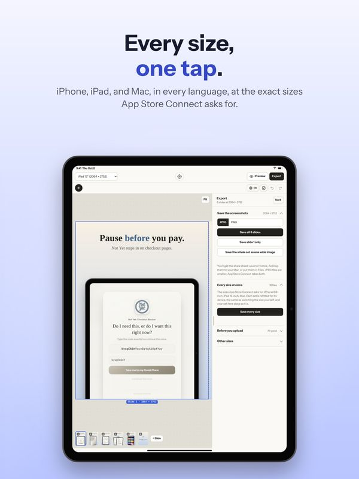
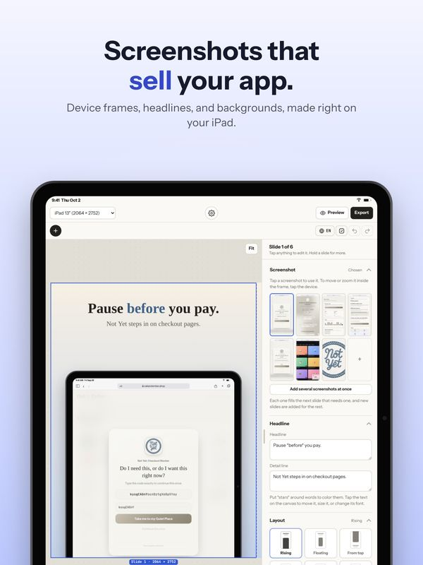

Every App Store Screenshot Size, Explained
App Store Connect lists a lot of screenshot sizes, and it isn't obvious which ones you actually have to make. The good news: for most apps it's one set per kind of device, because Apple scales the largest size down for everything smaller. Here's the whole list, and what to do with it.
The short answer: make iPhone 6.9" (1320 × 2868). Add iPad 13" (2064 × 2752) if your app runs on iPad, Mac (2880 × 1800) if it runs on the Mac, and one Apple Watch size if it has a watch app. Up to 10 screenshots per size, JPEG or PNG.
iPhone
The 6.9" display size is the one to make. App Store Connect uses it for every smaller iPhone, so one set covers them all. Accepted portrait sizes are 1320 × 2868, 1290 × 2796, and 1260 × 2736, with the same sizes turned sideways for landscape. The 6.5" size (1284 × 2778 or 1242 × 2688) is the older alternative; you only need it if you're not providing 6.9".
iPad
If your app runs on iPad, App Store Connect needs the 13" display size: 2064 × 2752 (or 2048 × 2732), portrait or landscape. As with iPhone, it scales this set down for every smaller iPad. An iPhone-only app doesn't need iPad screenshots at all.
Mac
Mac screenshots are 16:10, at one of four sizes: 1280 × 800, 1440 × 900, 2560 × 1600, or 2880 × 1800. Make the largest; there's no reason to send a smaller one. A Mac Catalyst or iPad app that also runs on the Mac uses these too.
iPhone Duo
From April 2027, apps that run on iPhone Duo also need screenshots of its two displays: 1398 × 2034 for the outer display and 2007 × 2853 for the inner one, or the same sizes turned sideways for landscape.
Header and search images (iOS 27)
These aren't screenshots, but they live on the same page in App Store Connect: a 3840 × 1646 product page header, a 3840 × 2560 search result image, or one 5244 × 2950 image for both. How to make iOS 27 App Store header and search images covers the rules.
Apple Watch
Watch apps need watch screenshots, and these are the one place where the sizes are tiny: 422 × 514 for the largest Ultra, then 410 × 502, 416 × 496, 396 × 484, 368 × 448, and 312 × 390 for older models. Upload one size and App Store Connect uses it for every watch. At this size, keep any words to two or three short lines.
Rules that apply to every size
- Up to 10 per size. The first three matter most: they're the ones people see in search results.
- JPEG or PNG, in RGB, with no transparency.
- Exact pixels. A screenshot even one pixel off is rejected when you upload it, so export at the size itself rather than resizing later.
- Each localization can have its own set. If your listing is in several languages, each can show its own words and screenshots.
Apple's own screenshot specifications page has the complete, current list, including App Previews (videos), which have their own sizes.
How Shotstand handles it
Pick the size at the top of the editor: iPhone 6.9" or 6.5", iPad 13", Mac at 2880 × 1800 or 1440 × 900, or an Apple Watch size. Everything is saved at exactly that size. Switch sizes and your words and screenshots carry over, with every layout refitted for the new device, so making the iPad set after the iPhone one takes seconds. With Premium, Save every size does iPhone, iPad, and Mac in one go.

